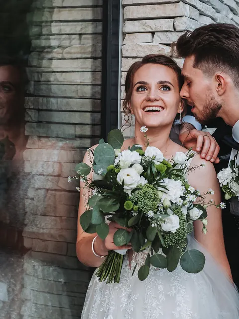
Reportaż ślubny
Cały dzień, od porannego światła po nocne rozmowy przy stole.
- przygotowania
- ceremonia
- przyjęcie i wesele
- krótka sesja w dniu ślubu albo w innym terminie
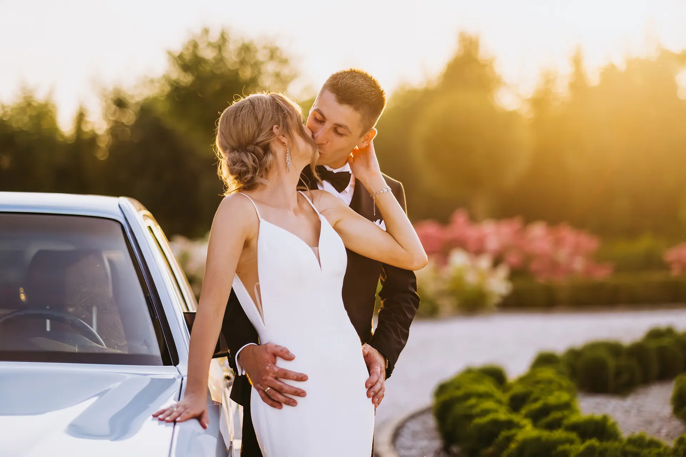
Naturalne reportaże i sesje, bez pozowania na siłę i bez presji. Tylko prawdziwe emocje, światło i bliskość, które tworzą Waszą historię.
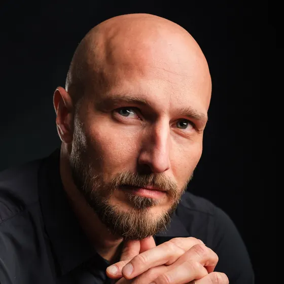
Uśmiech, który pojawia się tylko na ułamek sekundy. Dłoń, która szuka drugiej dłoni. Spojrzenie, które mówi więcej niż słowa.
Podczas ślubu jestem obok, ale nie przeszkadzam. Nie ustawiam ludzi, nie proszę o uśmiech, nie przerywam momentów. Obserwuję, czuję atmosferę i łapię chwile, które później stają się Waszymi najważniejszymi wspomnieniami.
Marcin, Deszcz'owe Studio
Jedne są ciche i spokojne, inne pełne śmiechu, wzruszeń i tańca do rana. Szczegółową ofertę przygotowuję indywidualnie, pod Wasz dzień.

Cały dzień, od porannego światła po nocne rozmowy przy stole.
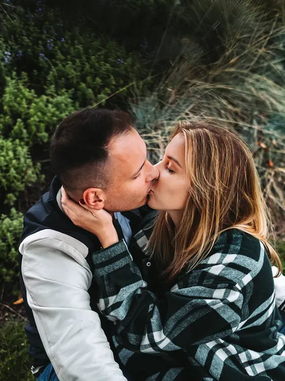
Czas tylko dla Was, w miejscu, które jest Wam bliskie: w lesie, w mieście, w domu.
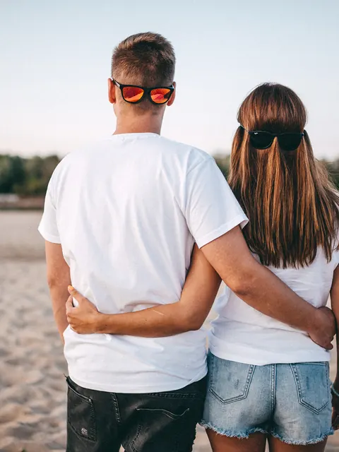
Bez pośpiechu i bez napięcia. Najpiękniej wychodzicie, kiedy zapominacie, że to sesja.
Ceremonia i wszystko wokół niej: bliscy, drobne gesty, uśmiechy i wzruszenia.
Czasem to cisza między spojrzeniami, a czasem śmiech, który wybucha bez powodu. Dlatego nie ustawiam ludzi, tylko fotografuję wtedy, gdy to ma sens.
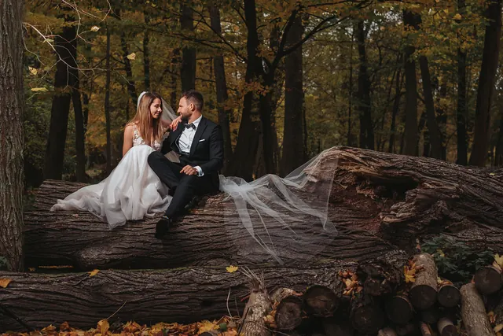
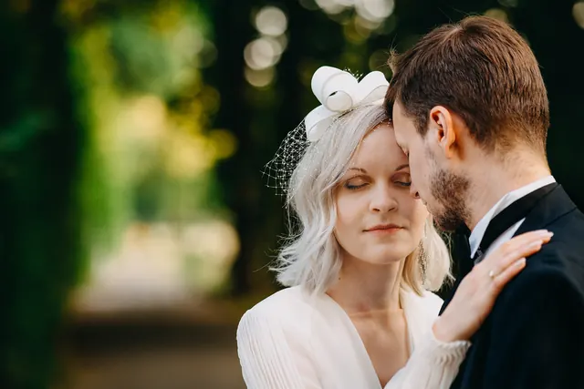
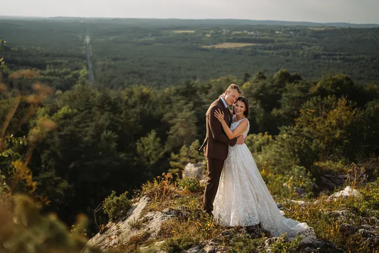
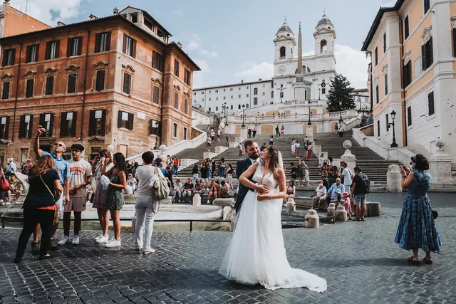
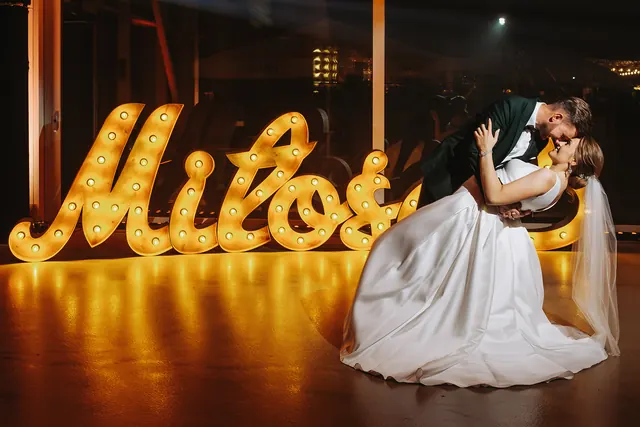
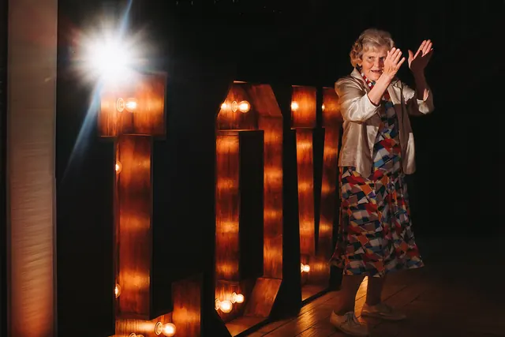
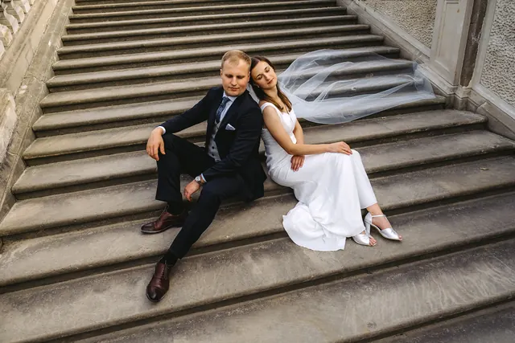
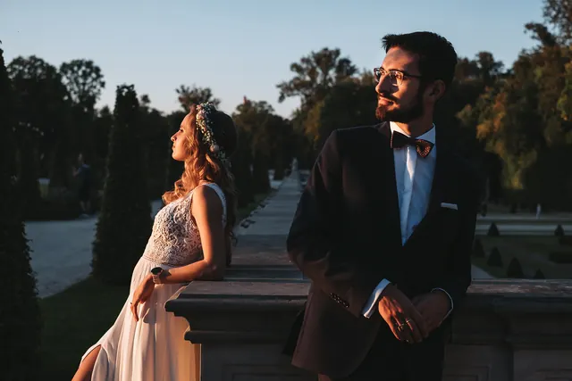
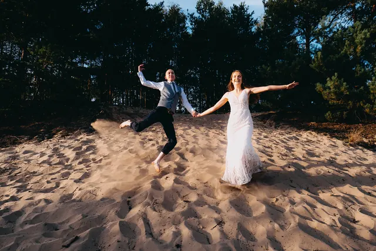
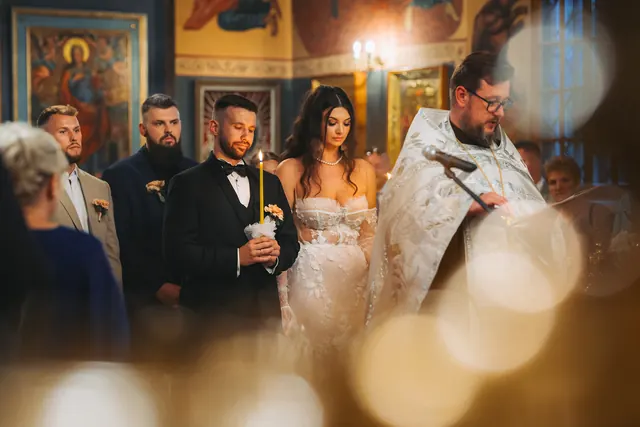
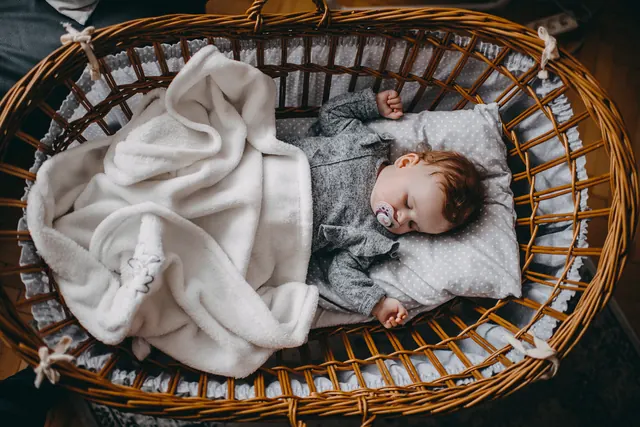
Pełne portfolio: śluby, sesje, chrzty
Albumy z Flickra podpinane automatycznie: nowy album dodany na Flickrze pojawia się tu sam.
Pary szukają fotografa na Instagramie, a zanim napiszą, sprawdzają w Google opinie i całe reportaże. Strona zbiera to w jednym miejscu: portfolio podzielone na śluby, sesje i chrzty, opinie par, ofertę i formularz zapytania o termin.
Nowe posty z Instagrama pokazują się na stronie same, więc nie trzeba niczego dodawać dwa razy.
Obserwuj @deszczowe_studioW podglądzie zdjęcia z obecnej strony. Na docelowej stronie w tym miejscu wyświetlają się automatycznie najnowsze posty z Instagrama.
„Marcin był z nami cały dzień, a jednocześnie jakby go nie było. Zdjęcia są pełne emocji, dokładnie takich, jakie czuliśmy. To nie są tylko fotografie. To wspomnienia.”
Anna i Michał
„Praca z Marcinem była czystą przyjemnością. Spokój, profesjonalizm i piękne kadry, które przerosły nasze oczekiwania.”
Kasia i Tomek
„Super zdjęcia! Wspaniała współpraca i podejście Marcina do tematu. Zero problemów i świetny kontakt. Dosłownie każdy gość znajdzie siebie uwiecznionego w najlepszych momentach zabawy.”
Marcin i Marta
„Kontakt bardzo dobry, zlecenie wykonane terminowo, a zdjęcia dostarczone w eleganckim drewnianym pudełku. Zdecydowanie polecamy tego fotografa!”
Joanna i Przemek
Napiszcie kilka słów o sobie i o Waszym dniu. Odpowiem możliwie szybko i zaproponuję dalsze kroki.
Ustalamy szczegóły, podpisujemy umowę i rezerwujemy termin. To moment na wszystkie pytania.
Jestem z Wami, ale nie w centrum. Gotowe zdjęcia dostajecie w eleganckiej galerii online.
Zwykle w ciągu kilku godzin. Jeśli piszecie wieczorem albo w weekend, odezwę się najpóźniej następnego dnia.
Tak. Dojeżdżam w dowolne miejsce w Polsce i za granicą.
Po ustaleniach podpisujemy umowę i wpłacacie zadatek. Wtedy data jest zarezerwowana wyłącznie dla Was.
Oczywiście. Możemy umówić się na krótką rozmowę telefoniczną albo online i spokojnie omówić szczegóły.
Napiszcie kilka słów o sobie, o Waszym dniu i o tym, co jest dla Was ważne. Pomogę zaplanować wszystko tak, żeby zdjęcia były naturalne i pełne emocji.
728 296 810 kontakt@deszczowestudio.plWarszawa, Garwolin i cała Polska